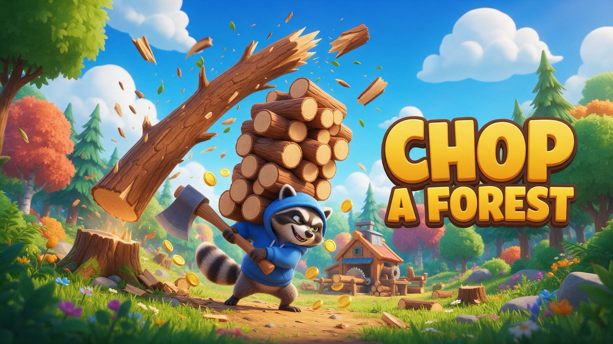

Chop a Forest: a cozy 3D lumberjack idle game

Chop a Forest is our relaxing 3D lumberjack game. You walk up to a tree and your lumberjack starts chopping on his own until it falls with a big TIMBER. The logs fly onto the stack on your back, and you carry them to the sawmill in the middle of the map to sell them.
What makes it fun
- No buttons to mash. Just move; chopping is automatic, so it is calm and satisfying.
- Steady upgrades. Coins buy a sharper axe, a bigger bag and faster running shoes.
- Four forest rings. Birch Grove, Oak Woods, Pine Forest and the Giant Forest, where trees are tougher but every log is worth much more.
- It never runs out. Stumps regrow, so there is always more to chop.
From the play-tests
Players in our first test sessions stayed a little over six minutes on average, which told us the slow, steady loop works. Next we want to add more tree types and a few small surprises in the deeper rings.
Controls
Phone: drag anywhere to walk. Desktop: WASD or arrow keys.
Play it free in your browser →Made by Holiday Play Studio, a small indie studio. We design our games with the help of AI coding tools (Claude Code), then play-test and polish them by hand. The games are free to play in your browser.